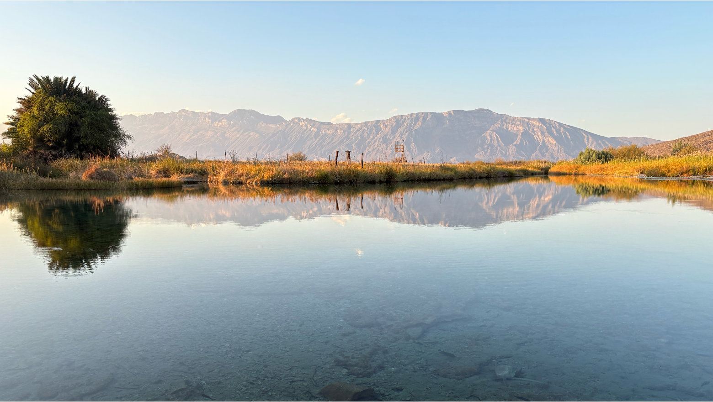
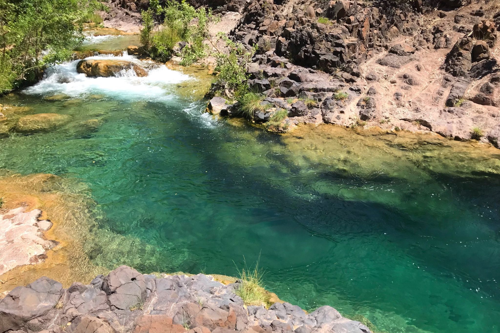

Stronger together for springs.
The Global Springs Alliance is a worldwide network built to connect and strengthen the people and organizations working to protect, restore, and sustainably steward springs and spring-dependent species.

Great work is happening. Too often, it happens in isolation.
Springs support extraordinary biodiversity, water security, and cultural values, yet they remain overlooked in conservation and water management around the world.
All too ofthen knowledge remains disconnected from practice. Successful approaches remain local instead of being shared. Organizations may lack the partners, expertise, visibility, or resources needed to act. The Alliance exists to close those gaps.
Connect. Enable. Transform.
Connect
Bring together organizations, researchers, communities, governments, funders, practitioners, and knowledge holders around shared challenges and opportunities.
Enable
Expand access to knowledge, skills, tools, technical support, partnerships, capacity, and resources.
Transform
Turn collaboration into stronger conservation action, better practice, greater investment, and lasting change for springs.

A platform for collaboration.
The Alliance is not designed to replace existing organizations or networks. It provides a shared global platform where expertise, ideas, opportunities, and resources can move more freely across regions and institutions.
Members and partners retain their own identities and strengths while gaining a larger community through which to collaborate and act.
Built for more than conversation.
The Alliance advances its mission through focused initiatives that bring the right people and institutions together around specific global conservation needs.
Its first major initiative is the IUCN Global Springs Task Force, an inter-Commission effort focused on building the scientific foundation to define, map, assess, prioritize, and guide springs conservation worldwide. It is the first of many initiatives the Alliance can support over time.

A world where springs are understood, valued, and conserved — and where the people working for them are connected across borders.